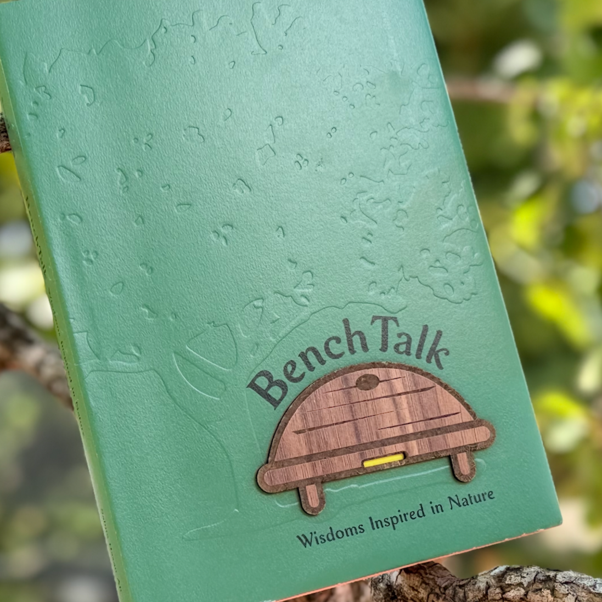
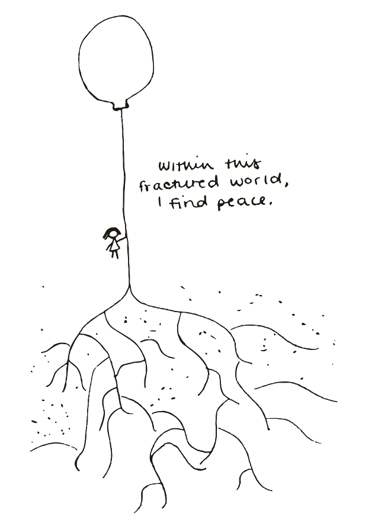

Join the Movement
Nature Sacred · 1996–2026
Join the movement.
Nature Sacred is made by the people who show up: community leaders, designers, funders, healthcare leaders, neighbors. There's more than one way in.
Ways in
Eight paths
Also
Read and listen

The book · 208 pages
Buy the book.
Hundreds of entries—drawings, prayers, plain sentences—gathered from the Little Yellow Journals, like the one below.
Buy the book →
The podlet · 3 minutes
Listen to the podlet.
BenchStories, hosted by Salma Hasan Ali, brings journal entries to life—three minutes at a time.
Listen now →
Somebody made room, and someone sketched this in a Little Yellow Journal because of it. That is what all eight paths amount to—and it is how the next entry gets written.